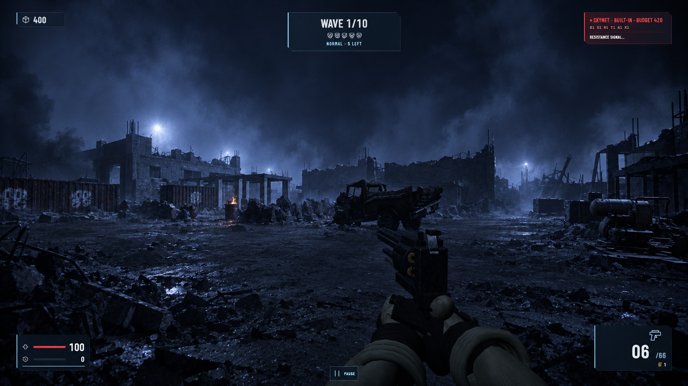

Courtyard / resistance stronghold
01 / 05Ground-level diagonal across the central combat yard toward the command building and eastern structures.


Prompt used + repeatable player POV
Feet: [-12, 0, -17] · Look at: [5, 2, 18] · FOV 72° · Standing eye height 1.65 m
Use case: sketch-to-render. Asset type: revised environment target for the playable Bunker 7 scene. PRIMARY DIRECTION Explicitly evoke James Cameron's original The Terminator (1984), specifically the graphic language and cinematographic look of its Future War night sequences. Match the supplied blue, smoke-filled ruined battlefield still. The reference collection is https://sites.pitt.edu/~goscilo/Sci-Fi/FilmStills/TheTerminator.html (James Cameron, 1984; cinematography by Adam Greenberg). INPUT ROLES Image 1: the CURRENT GAMEPLAY SCREENSHOT for this POV. Use it almost as a depth map or rough blockout. It dictates perspective and spatial organization; its flat materials, crude details and present lighting are replaceable. Image 2: references/terminator-1984-user-reference.png, the user's film-look reference. This dictates color, exposure, atmosphere, silhouette treatment and photographic character. It must be attached to every generation. The URL supplies context; the actual attached still supplies visual guidance. The previously generated amber-lit compound images are rejected. Do not use them as references. VISUAL OUTCOME A suffocating blue-black nocturnal war ruin. Dense cobalt and steel-blue smoke layers separate foreground wreckage, middle-distance structures and the far background. Large near-black masses dominate, with thin hard blue-white rim light catching broken concrete edges, twisted metal and pipework. Powerful cold backlight blooms through airborne dust and smoke; a few small white highlights glow with a soft photographic halo. Let objects disappear into darkness and re-emerge at their edges. Readability comes from silhouette and depth separation, not from evenly illuminating every surface. Use the tactile, photographed-set and miniature-effects character of the original 1984 film: rough physical debris, soot, broken masonry, charred steel, modest analog grain, softly glowing highlights and subdued local texture contrast. Preserve detail in the rendering without making every surface equally sharp or shiny. Material color largely disappears into the blue night. Tiny pale-violet glints may accent the haze, subordinate to the cold blue-white light; do not add foreground laser beams or combat subjects. The map should feel devastated, abandoned and dangerous. Dress existing walls and cover with fractured edges, exposed reinforcement, bent framing and irregular rubble silhouettes. Concentrate debris in existing cover zones and at wall bases; keep traversable lanes open. Ground is largely dark ash, crushed masonry and soot with occasional dull metallic or damp catches. Deep layered smoke should give the background weight instead of leaving a featureless black sky. LOCKED COMPOSITION Keep the screenshot's exact camera position, 72-degree field of view, 16:9 crop, horizon, vanishing points, standing player eye level and foreground scale. Keep major building footprints, cover positions, floor levels, openings, stairs and sightlines aligned to the input. Retain the scene's large geometric arrangement while radically improving its visual expression. Preserve weapon, hands and HUD in the same screen-space positions and shapes. Do not reproduce the film still's camera, characters or robots; transfer its look to this map. Output one full-frame player POV. AVOID No warm amber lighting scheme, evenly spaced glowing wall lamps, welcoming resistance base, decorative military signage, dominant orange fires, glossy rain-soaked paving, mirror-like puddles, teal-and-orange grading, neon cyberpunk, sleek sci-fi architecture, clean modern game presentation, hyper-sharp texture noise, cinematic letterbox bars, lens changes or shallow depth of field. Existing barrel fires can remain small dim localized sources; they must not set the palette. No new characters, enemies, towering machines or large buildings. Avoid blanket fog that erases the map: keep foreground silhouette, middle-distance landmarks and distant haze distinct. COURTYARD / BROAD BATTLEFIELD APPROACH Lock the left rear two-story command block, its low colonnade, the left perimeter cargo band, central rubble divide, middle-right truck and right-edge generator to their current positions. Turn these existing shapes into looming, damaged silhouettes. Cold blue-white light from behind the distant structures catches broken roof edges and outlines the wrecked truck. Layer drifting smoke behind and between the structures; keep the central route readable against the haze. The truck, generator and near rubble should have heavy black cores with a few hard metallic highlights. Add fractured masonry and exposed rods within the existing cover footprints. The strongest impression should be the oppressive blue battlefield of James Cameron's 1984 The Terminator, with the courtyard layout still immediately recognizable.
Cargo approach / eastern flank
02 / 05Ground-level approach to the container dock, with cover, cargo silhouettes and the barracks beyond.


Prompt used + repeatable player POV
Feet: [15, 0, -19] · Look at: [25, 2, 7] · FOV 72° · Standing eye height 1.65 m
Use case: sketch-to-render. Asset type: revised environment target for the playable Bunker 7 scene. PRIMARY DIRECTION Explicitly evoke James Cameron's original The Terminator (1984), specifically the graphic language and cinematographic look of its Future War night sequences. Match the supplied blue, smoke-filled ruined battlefield still. The reference collection is https://sites.pitt.edu/~goscilo/Sci-Fi/FilmStills/TheTerminator.html (James Cameron, 1984; cinematography by Adam Greenberg). INPUT ROLES Image 1: the CURRENT GAMEPLAY SCREENSHOT for this POV. Use it almost as a depth map or rough blockout. It dictates perspective and spatial organization; its flat materials, crude details and present lighting are replaceable. Image 2: references/terminator-1984-user-reference.png, the user's film-look reference. This dictates color, exposure, atmosphere, silhouette treatment and photographic character. It must be attached to every generation. The URL supplies context; the actual attached still supplies visual guidance. The previously generated amber-lit compound images are rejected. Do not use them as references. VISUAL OUTCOME A suffocating blue-black nocturnal war ruin. Dense cobalt and steel-blue smoke layers separate foreground wreckage, middle-distance structures and the far background. Large near-black masses dominate, with thin hard blue-white rim light catching broken concrete edges, twisted metal and pipework. Powerful cold backlight blooms through airborne dust and smoke; a few small white highlights glow with a soft photographic halo. Let objects disappear into darkness and re-emerge at their edges. Readability comes from silhouette and depth separation, not from evenly illuminating every surface. Use the tactile, photographed-set and miniature-effects character of the original 1984 film: rough physical debris, soot, broken masonry, charred steel, modest analog grain, softly glowing highlights and subdued local texture contrast. Preserve detail in the rendering without making every surface equally sharp or shiny. Material color largely disappears into the blue night. Tiny pale-violet glints may accent the haze, subordinate to the cold blue-white light; do not add foreground laser beams or combat subjects. The map should feel devastated, abandoned and dangerous. Dress existing walls and cover with fractured edges, exposed reinforcement, bent framing and irregular rubble silhouettes. Concentrate debris in existing cover zones and at wall bases; keep traversable lanes open. Ground is largely dark ash, crushed masonry and soot with occasional dull metallic or damp catches. Deep layered smoke should give the background weight instead of leaving a featureless black sky. LOCKED COMPOSITION Keep the screenshot's exact camera position, 72-degree field of view, 16:9 crop, horizon, vanishing points, standing player eye level and foreground scale. Keep major building footprints, cover positions, floor levels, openings, stairs and sightlines aligned to the input. Retain the scene's large geometric arrangement while radically improving its visual expression. Preserve weapon, hands and HUD in the same screen-space positions and shapes. Do not reproduce the film still's camera, characters or robots; transfer its look to this map. Output one full-frame player POV. AVOID No warm amber lighting scheme, evenly spaced glowing wall lamps, welcoming resistance base, decorative military signage, dominant orange fires, glossy rain-soaked paving, mirror-like puddles, teal-and-orange grading, neon cyberpunk, sleek sci-fi architecture, clean modern game presentation, hyper-sharp texture noise, cinematic letterbox bars, lens changes or shallow depth of field. Existing barrel fires can remain small dim localized sources; they must not set the palette. No new characters, enemies, towering machines or large buildings. Avoid blanket fog that erases the map: keep foreground silhouette, middle-distance landmarks and distant haze distinct. CARGO FLANK / WRECKAGE AND SILHOUETTES Lock the raised loading slab and red container left of center, near left-center barrel, distant colonnade, right-edge crate and open lane on the right. Suppress the container's red paint into nearly black-blue corrugated steel. Hard cold light grazes its ribs and damaged corners while most of its face stays dark. Existing low buildings become charred concrete shells against blue smoke. Use bent structural details and small debris around the platform edges, preserving its silhouette and lane width. Keep the barrel fire low and faint; eliminate the giant luminous square-particle column. Blue haze and sparse white rim highlights, rather than firelight, define the scene. The loading yard must feel like a war ruin photographed for the original 1984 film.
Barracks / inhabited shelter
03 / 05Standing inside the barracks, looking along the occupied room toward its stairs.


Prompt used + repeatable player POV
Feet: [36, 0, 5.5] · Look at: [36, 1.65, 22] · FOV 72° · Standing eye height 1.65 m
Use case: sketch-to-render. Asset type: revised environment target for the playable Bunker 7 scene. PRIMARY DIRECTION Explicitly evoke James Cameron's original The Terminator (1984), specifically the graphic language and cinematographic look of its Future War night sequences. Match the supplied blue, smoke-filled ruined battlefield still. The reference collection is https://sites.pitt.edu/~goscilo/Sci-Fi/FilmStills/TheTerminator.html (James Cameron, 1984; cinematography by Adam Greenberg). INPUT ROLES Image 1: the CURRENT GAMEPLAY SCREENSHOT for this POV. Use it almost as a depth map or rough blockout. It dictates perspective and spatial organization; its flat materials, crude details and present lighting are replaceable. Image 2: references/terminator-1984-user-reference.png, the user's film-look reference. This dictates color, exposure, atmosphere, silhouette treatment and photographic character. It must be attached to every generation. The URL supplies context; the actual attached still supplies visual guidance. The previously generated amber-lit compound images are rejected. Do not use them as references. VISUAL OUTCOME A suffocating blue-black nocturnal war ruin. Dense cobalt and steel-blue smoke layers separate foreground wreckage, middle-distance structures and the far background. Large near-black masses dominate, with thin hard blue-white rim light catching broken concrete edges, twisted metal and pipework. Powerful cold backlight blooms through airborne dust and smoke; a few small white highlights glow with a soft photographic halo. Let objects disappear into darkness and re-emerge at their edges. Readability comes from silhouette and depth separation, not from evenly illuminating every surface. Use the tactile, photographed-set and miniature-effects character of the original 1984 film: rough physical debris, soot, broken masonry, charred steel, modest analog grain, softly glowing highlights and subdued local texture contrast. Preserve detail in the rendering without making every surface equally sharp or shiny. Material color largely disappears into the blue night. Tiny pale-violet glints may accent the haze, subordinate to the cold blue-white light; do not add foreground laser beams or combat subjects. The map should feel devastated, abandoned and dangerous. Dress existing walls and cover with fractured edges, exposed reinforcement, bent framing and irregular rubble silhouettes. Concentrate debris in existing cover zones and at wall bases; keep traversable lanes open. Ground is largely dark ash, crushed masonry and soot with occasional dull metallic or damp catches. Deep layered smoke should give the background weight instead of leaving a featureless black sky. LOCKED COMPOSITION Keep the screenshot's exact camera position, 72-degree field of view, 16:9 crop, horizon, vanishing points, standing player eye level and foreground scale. Keep major building footprints, cover positions, floor levels, openings, stairs and sightlines aligned to the input. Retain the scene's large geometric arrangement while radically improving its visual expression. Preserve weapon, hands and HUD in the same screen-space positions and shapes. Do not reproduce the film still's camera, characters or robots; transfer its look to this map. Output one full-frame player POV. AVOID No warm amber lighting scheme, evenly spaced glowing wall lamps, welcoming resistance base, decorative military signage, dominant orange fires, glossy rain-soaked paving, mirror-like puddles, teal-and-orange grading, neon cyberpunk, sleek sci-fi architecture, clean modern game presentation, hyper-sharp texture noise, cinematic letterbox bars, lens changes or shallow depth of field. Existing barrel fires can remain small dim localized sources; they must not set the palette. No new characters, enemies, towering machines or large buildings. Avoid blanket fog that erases the map: keep foreground silhouette, middle-distance landmarks and distant haze distinct. BARRACKS / DARK SURVIVAL SHELTER Lock the low flat ceiling, broad partition panels, narrow posts, left window, right opening, low rectangular object and far stair beside the doorway. Translate the supplied film still's lighting into this existing interior: cold blue light entering through the actual openings silhouettes partitions, catches chipped edges and cuts through thin suspended dust. The far doorway is a faint blue depth cue. Ceiling and foreground wall faces stay mostly dark. Rough spalled concrete, scorched posts, exposed reinforcement at damaged corners and minimal utilitarian remnants make this a desperate shelter inside a ruined shell. The low object can read as a worn field bunk, mostly in silhouette. Preserve the long central aisle. Avoid adding decorative lamps, warm hospitality, numerous crates or a brightly staged military room.
Service trench / underground route
04 / 05Standing on the sunken service floor, looking along the long maintenance route.


Prompt used + repeatable player POV
Feet: [-36, -3.5, -12.5] · Look at: [-35.7, -1.85, 10] · FOV 72° · Standing eye height 1.65 m
Use case: sketch-to-render. Asset type: revised environment target for the playable Bunker 7 scene. PRIMARY DIRECTION Explicitly evoke James Cameron's original The Terminator (1984), specifically the graphic language and cinematographic look of its Future War night sequences. Match the supplied blue, smoke-filled ruined battlefield still. The reference collection is https://sites.pitt.edu/~goscilo/Sci-Fi/FilmStills/TheTerminator.html (James Cameron, 1984; cinematography by Adam Greenberg). INPUT ROLES Image 1: the CURRENT GAMEPLAY SCREENSHOT for this POV. Use it almost as a depth map or rough blockout. It dictates perspective and spatial organization; its flat materials, crude details and present lighting are replaceable. Image 2: references/terminator-1984-user-reference.png, the user's film-look reference. This dictates color, exposure, atmosphere, silhouette treatment and photographic character. It must be attached to every generation. The URL supplies context; the actual attached still supplies visual guidance. The previously generated amber-lit compound images are rejected. Do not use them as references. VISUAL OUTCOME A suffocating blue-black nocturnal war ruin. Dense cobalt and steel-blue smoke layers separate foreground wreckage, middle-distance structures and the far background. Large near-black masses dominate, with thin hard blue-white rim light catching broken concrete edges, twisted metal and pipework. Powerful cold backlight blooms through airborne dust and smoke; a few small white highlights glow with a soft photographic halo. Let objects disappear into darkness and re-emerge at their edges. Readability comes from silhouette and depth separation, not from evenly illuminating every surface. Use the tactile, photographed-set and miniature-effects character of the original 1984 film: rough physical debris, soot, broken masonry, charred steel, modest analog grain, softly glowing highlights and subdued local texture contrast. Preserve detail in the rendering without making every surface equally sharp or shiny. Material color largely disappears into the blue night. Tiny pale-violet glints may accent the haze, subordinate to the cold blue-white light; do not add foreground laser beams or combat subjects. The map should feel devastated, abandoned and dangerous. Dress existing walls and cover with fractured edges, exposed reinforcement, bent framing and irregular rubble silhouettes. Concentrate debris in existing cover zones and at wall bases; keep traversable lanes open. Ground is largely dark ash, crushed masonry and soot with occasional dull metallic or damp catches. Deep layered smoke should give the background weight instead of leaving a featureless black sky. LOCKED COMPOSITION Keep the screenshot's exact camera position, 72-degree field of view, 16:9 crop, horizon, vanishing points, standing player eye level and foreground scale. Keep major building footprints, cover positions, floor levels, openings, stairs and sightlines aligned to the input. Retain the scene's large geometric arrangement while radically improving its visual expression. Preserve weapon, hands and HUD in the same screen-space positions and shapes. Do not reproduce the film still's camera, characters or robots; transfer its look to this map. Output one full-frame player POV. AVOID No warm amber lighting scheme, evenly spaced glowing wall lamps, welcoming resistance base, decorative military signage, dominant orange fires, glossy rain-soaked paving, mirror-like puddles, teal-and-orange grading, neon cyberpunk, sleek sci-fi architecture, clean modern game presentation, hyper-sharp texture noise, cinematic letterbox bars, lens changes or shallow depth of field. Existing barrel fires can remain small dim localized sources; they must not set the palette. No new characters, enemies, towering machines or large buildings. Avoid blanket fog that erases the map: keep foreground silhouette, middle-distance landmarks and distant haze distinct. SERVICE ROUTE / BLUE INDUSTRIAL DARKNESS Lock the wide passage, low flat ceiling, paired upper-wall pipes, central doorway, distant stair and right-side steam source. Give pipes nearly black cores with thin cold blue-white highlights; show damaged brackets and occasional dull exposed metal. Illuminate from the existing far opening and a sparse cold maintenance source concealed by the current structural edges. Blue-gray steam and dust create overlapping depth planes; darkness conceals much of the walls. Damp soot-streaked concrete, mineral seams and scattered grit should read quietly without making the whole floor reflective. Keep the rectangular doorway and open floor legible. Evoke the oppressive physical industrial atmosphere of James Cameron's original The Terminator with the supplied Future War still's blue-black palette. No orange caged-lamp corridor, arched tunnel or newly invented openings. CORRECTION PASS Use case: precise-object-edit. Correct Image 1, the blue Future War service-passage target. Image 2 is the original gameplay screenshot and is the binding structural reference. Restore the LOW FLAT CONTINUOUS CONCRETE CEILING across the full upper part of the image, at exactly the height and perspective it has in Image 2. This is an enclosed underground maintenance corridor, not an outdoor trench: NO sky, NO exterior skyline, NO missing roof, NO openings overhead. Preserve Image 1's James Cameron original The Terminator (1984) blue-black palette, pipe locations, dark rough concrete, central rectangular doorway, distant stair, camera framing, weapon and HUD. Keep atmospheric blue haze inside this enclosed space with cold illumination through the existing far doorway; no warm lamps. Replace the blocky gray particles on the right with soft blue-gray steam. Keep the long central floor traversable. Change only the ceiling/sky region needed to enclose the passage and the blocky steam, preserving the rest. Output one 16:9 image.
Barracks roof / battlefield overview
05 / 05Standing on the stair-accessible barracks roof, looking across the dock and central yard. Eye height remains 1.65 m above the roof.


Prompt used + repeatable player POV
Feet: [31.6, 6.4, 6] · Look at: [-6, 1, 0] · FOV 72° · Standing eye height 1.65 m
Use case: sketch-to-render. Asset type: revised environment target for the playable Bunker 7 scene. PRIMARY DIRECTION Explicitly evoke James Cameron's original The Terminator (1984), specifically the graphic language and cinematographic look of its Future War night sequences. Match the supplied blue, smoke-filled ruined battlefield still. The reference collection is https://sites.pitt.edu/~goscilo/Sci-Fi/FilmStills/TheTerminator.html (James Cameron, 1984; cinematography by Adam Greenberg). INPUT ROLES Image 1: the CURRENT GAMEPLAY SCREENSHOT for this POV. Use it almost as a depth map or rough blockout. It dictates perspective and spatial organization; its flat materials, crude details and present lighting are replaceable. Image 2: references/terminator-1984-user-reference.png, the user's film-look reference. This dictates color, exposure, atmosphere, silhouette treatment and photographic character. It must be attached to every generation. The URL supplies context; the actual attached still supplies visual guidance. The previously generated amber-lit compound images are rejected. Do not use them as references. VISUAL OUTCOME A suffocating blue-black nocturnal war ruin. Dense cobalt and steel-blue smoke layers separate foreground wreckage, middle-distance structures and the far background. Large near-black masses dominate, with thin hard blue-white rim light catching broken concrete edges, twisted metal and pipework. Powerful cold backlight blooms through airborne dust and smoke; a few small white highlights glow with a soft photographic halo. Let objects disappear into darkness and re-emerge at their edges. Readability comes from silhouette and depth separation, not from evenly illuminating every surface. Use the tactile, photographed-set and miniature-effects character of the original 1984 film: rough physical debris, soot, broken masonry, charred steel, modest analog grain, softly glowing highlights and subdued local texture contrast. Preserve detail in the rendering without making every surface equally sharp or shiny. Material color largely disappears into the blue night. Tiny pale-violet glints may accent the haze, subordinate to the cold blue-white light; do not add foreground laser beams or combat subjects. The map should feel devastated, abandoned and dangerous. Dress existing walls and cover with fractured edges, exposed reinforcement, bent framing and irregular rubble silhouettes. Concentrate debris in existing cover zones and at wall bases; keep traversable lanes open. Ground is largely dark ash, crushed masonry and soot with occasional dull metallic or damp catches. Deep layered smoke should give the background weight instead of leaving a featureless black sky. LOCKED COMPOSITION Keep the screenshot's exact camera position, 72-degree field of view, 16:9 crop, horizon, vanishing points, standing player eye level and foreground scale. Keep major building footprints, cover positions, floor levels, openings, stairs and sightlines aligned to the input. Retain the scene's large geometric arrangement while radically improving its visual expression. Preserve weapon, hands and HUD in the same screen-space positions and shapes. Do not reproduce the film still's camera, characters or robots; transfer its look to this map. Output one full-frame player POV. AVOID No warm amber lighting scheme, evenly spaced glowing wall lamps, welcoming resistance base, decorative military signage, dominant orange fires, glossy rain-soaked paving, mirror-like puddles, teal-and-orange grading, neon cyberpunk, sleek sci-fi architecture, clean modern game presentation, hyper-sharp texture noise, cinematic letterbox bars, lens changes or shallow depth of field. Existing barrel fires can remain small dim localized sources; they must not set the palette. No new characters, enemies, towering machines or large buildings. Avoid blanket fog that erases the map: keep foreground silhouette, middle-distance landmarks and distant haze distinct. ACCESSIBLE ROOF / RUINED BATTLEFIELD GESTALT This is the existing standing player camera on the 6.4 m barracks roof, with eyes 1.65 m above the roof surface. Lock the foreground parapet, long left colonnade, container below center-left, container at right, central rubble line, truck, barrels, perimeter and far gate. Make the same map read as successive layers of near-black ruined silhouettes receding into cobalt smoke. Use broken roof-edge details, charred framing and jagged rubble only along existing structures and cover. Cold backlight beyond the far perimeter makes a few metal edges and smoke plumes glow white-blue; sparse pale-violet haze glints stay subtle. The foreground parapet should remain dark and physically rough. Keep the full yard layout readable through silhouette separation without flooding it with light. No amber-lit compound, shimmering plaza, extra skyline or drone perspective.